Advanced Practical Genetics
Microarray - Hands-on data analysis
203.305
Dr. Pierre-Yves Dupont, Postdoctoral Researcher
Computational Biology Research Group
p.y.dupont@massey.ac.nz
Planning
- 25.9.15 – Introduction (lecture), AHB1.40B
- 29.9.15 – From raw data to lists of differentially expressed genes (Step by step analysis of a microarray data set using the R language, 3h lab, SC5.10) - Discussion worksheet due, research proposal due
- 2.10.15 – Paper discussion, AHB1.40B
- 6.10.15 – Biological interpretation of microarray data (Gene ontology analysis using the R language + online research of candidate genes, 3h lab, SC5.10)
- 9.10.15 – Lab discussion, AHB1.40B
Microarray studies
- Introduction
- Microarray technology
- Analysis
- MIAME
- Examples of microarray studies (paper discussion topic and lab topic)
What are microarrays?
A microarray is a solid support (such as a membrane or glass microscope slide) on which DNA of known sequence is deposited in a grid-like array.
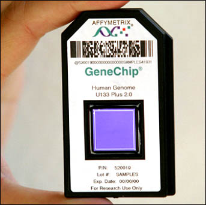
What are microarrays?
DNA microarray
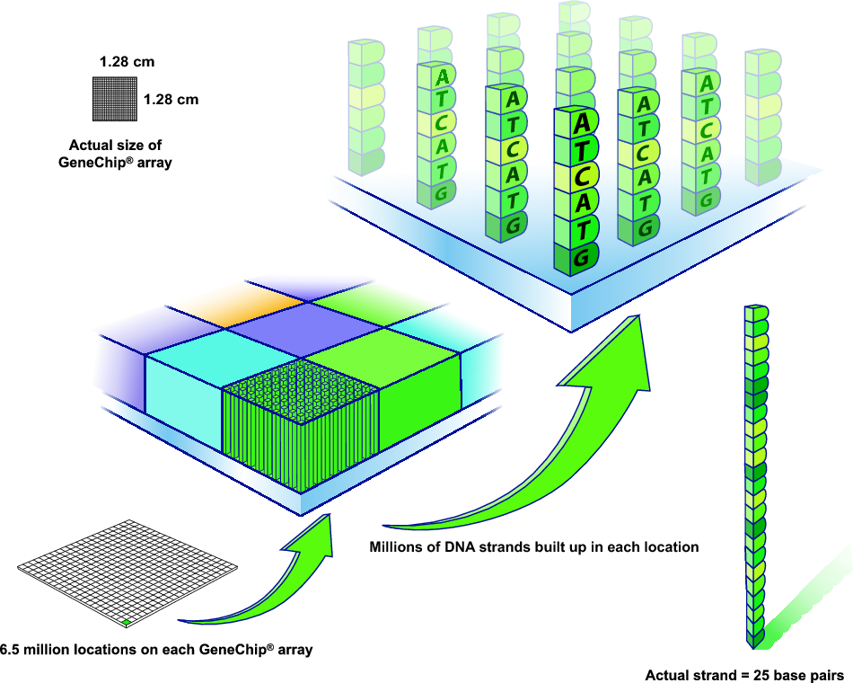What are microarrays
Hybridisation and transcriptomics?
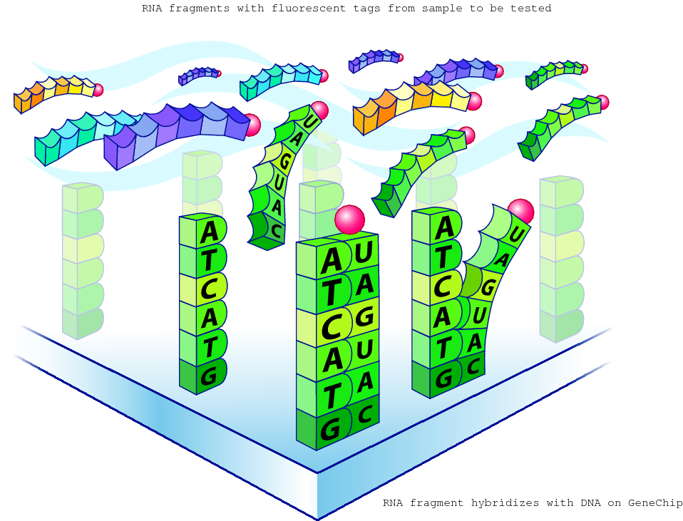The amount of RNA hybridised on each grid location can be measured and is a proxy for the gene expression level
Microarray applications
- Gene expression analysis
- Re-sequencing
- SNP-analysis
- DNA-Protein interactions
- Discovery of new transcripts/alternative splice variants
Expression Studies
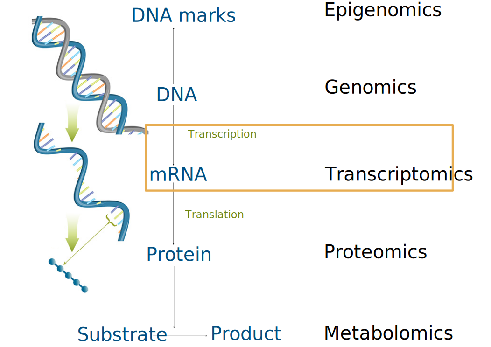Definitions
- Genome: entire DNA sequence of an organism
- Epigenome: chemical marks of the genome that modify its expression
- Transcriptome: all gene transcripts present in a given cell/tissue at a given time (“snapshot”)
- Transcriptomics: global analysis of gene expression = genome-wide expression profiling
Definitions
- cDNA: complementary DNA made from mRNA by the enzyme reverse transcriptase
- EST: Expressed Sequence Tag, small pieces of an expressed gene (cDNA)
- Hybridisation: based on complementary molecules, sequences that are able to base-pair with one another. When two complementary sequences find each other, they will lock together, or hybridise (primer annealing, probe-target binding etc).
Genome-wide expression studies - Medical applications
- Cancer research: Cell-cycle monitoring, genetic markers detection
- Drug development and response: Treatment-induced expression pattern
- Diagnosis: Disease-associated expression patterns
Genome-wide expression studies - Biological applications
- Development biology: comparison of different developmental stages
- Ecology: interactions between organisms (symbiosis, pathogenicity...) or between organisms and environment (temperature, nutrient...)
- Evolution: within and between species variation, hybrids vs. parents, diploids vs. polyploids
- Functional analyses: wild type vs. mutant
Microarray studies
- Introduction
- Microarray technology
- Analysis
- MIAME
- Examples of microarray studies (paper discussion topic and lab topic)
Microarray analysis principle
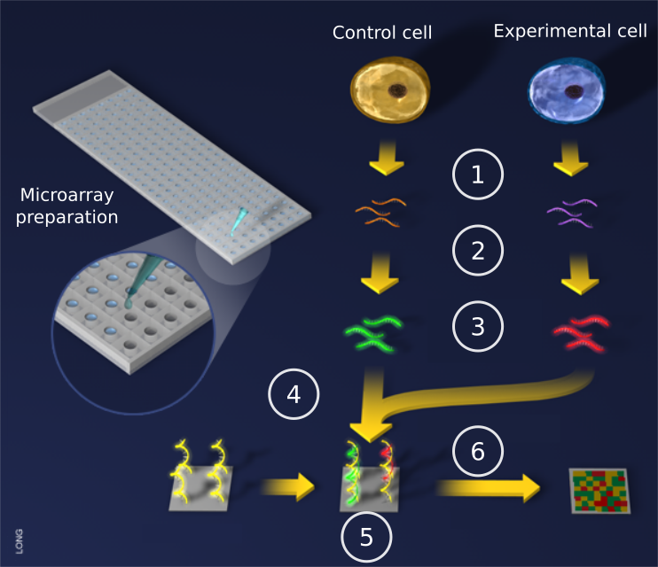Microarray analysis principle
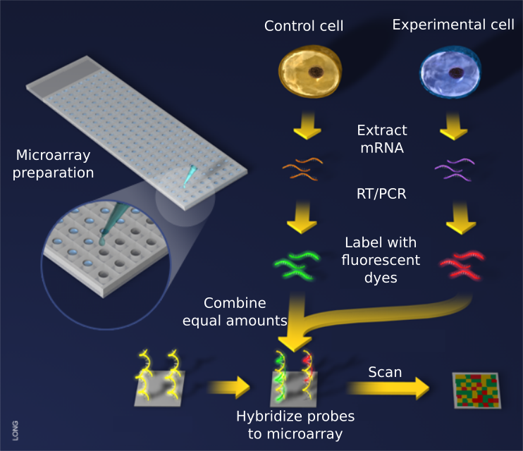Competitive hybridisation
It is possible to represent different samples on one microarray using different fluorescent molecules (fluorophores)
- Cyanin 3 (Cy3): green fluorescence (excited at 550nm, emission at 570nm)
- Cyanin 5 (Cy5): red fluorescence (excited at 650nm, emission at 770nm)
Competitive hybridisation
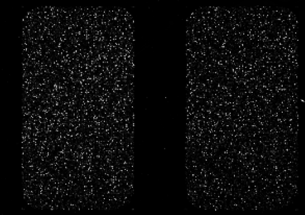Competitive hybridisation
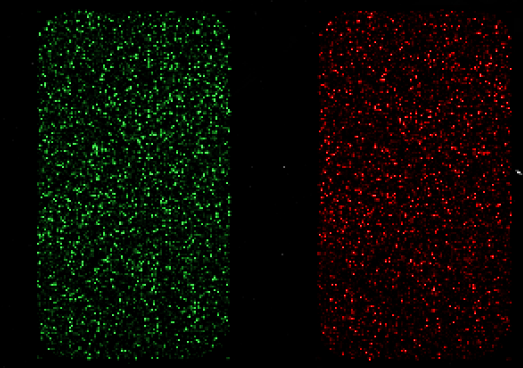Competitive hybridisation
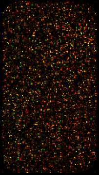Microarray study pipeline
Question driven
Goals? Hypothesis? Questions?
Microarray study pipeline
- Platform
- What technology?
- Source of the gene probes?
- Cross-species hybridisation?
Microarray study pipeline
- Platform
- Experimental design
- What Analysis?
- What analysis software?
- Replication level
- Hybridisation scheme
Microarray study pipeline
- Platform
- Experimental design
- Laboratory steps
- Sample preparation and labelling
- Hybridisation
- Washing
- Image acquisition
Microarray study pipeline
- Platform
- Experimental design
- Laboratory steps
- Bioinformatics steps
- Data transformation and normalization
- Analysis of differentially expressed genes (statistical tests, gene ontology, ...)
- Visualization (graphics)
- Data storage (databases, MIAME standards)
Microarray study pipeline
- Platform
- Experimental design
- Laboratory steps
- Bioinformatics steps
- Data interpretation
- Answers?
- New hypotheses?
- Follow-up experiments?
- Validation?
Microarray studies
- Introduction
- Microarray technology
- Analysis
- MIAME
- Examples of microarray studies (paper discussion topic and lab topic)
Noise reduction
Before
After
Log Fold Ratio
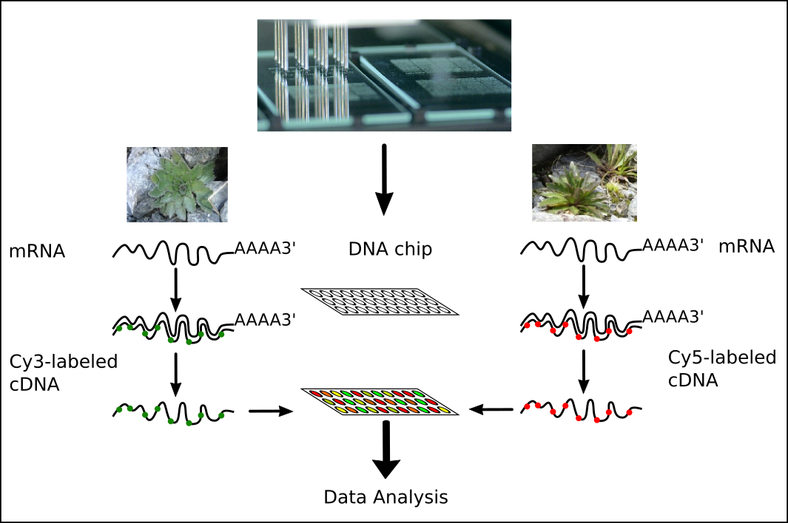Expression ratio: $log({\color{red}{Cy5} \over \color{green}{Cy3}})$
Expression ratios, M & A
- $\color{green}{Cy3} = Sample1$ (Green)
- $\color{red}{Cy5} = Sample2$ (Red)
- $\color{red}{Cy5}$ > $\color{green}{Cy3}$: higher expression in sample 2
- $\color{green}{Cy3}$ > $\color{red}{Cy5}$: higher expression in sample 1
- Log fold ratio: $M = log_2({\color{red}{Cy5} \over \color{green}{Cy3}})$ = $log_2({\color{red}{Cy5}}) - log_2({\color{green}{Cy3}})$
- Expression average: $A = {1\over2} (log_2(\color{red}{Cy5}) + log_2(\color{green}{Cy3}))$ = ${1\over2}log_2(\color{red}{Cy5} \color{green}{Cy3})$
Log Fold Ratio
Reminder: $log_2(x)$ is the unique real number $y$ such that: $2^y = x$.
For example: $log_2(8) = 3$ because $2^3 = 8$
| $\color{red}{Cy5}/\color{green}{Cy3}$ | $log_2({\color{red}{Cy5}/\color{green}{Cy3}})$ |
|---|---|
| 4 | 2 |
| 2 | 1 |
| 1 | 0 |
| 0.5 | -1 |
| 0.25 | -2 |
Hypothesis testing
T-test
Null hypothesis ($H_0$): gene A is not differentially expressed between two treatments
Mean:
$\overline{x}={{1 \over M} \sum_{i=1}^{M}{x_i}}$; for gene $x$ in M replicates
Variance:
$S_{x}^2 = {{1 \over {M-1}} \sum_{i=1}^{M}({x_i - \overline{x}^2})}$
T-statistic:
$T_x={{ \overline{x_{S_1}} - \overline{x_{S_2}} } \over \sqrt[2]{ {S_{x_{S_1}}^2 \over M} + {S_{x_{S_2}}^2 \over N} } }$
T-test and P-value

T-test is used only to compare two samples. To compare more, ANOVA (ANalysis Of VAriance) is used.
Hypothesis testing
T-test
Null hypothesis ($H_0$): gene A is not differentially expressed between two treatments
- Compute the signal to noise ratio (difference of the means or medians) for each gene
- Compute the t-statistic for each gene using the replicates
- Compare t-statistic with the t-distribution
- If t-statistic is more extreme than the critical t-statistic at a chosen significance level (e.g. $\alpha=0.05$) reject the null hypothesis, otherwise accept it. P-value estimation
Quiz
Usually, a p < 0.05 is considered small enough to reject the null hypothesis of no biological effect in favour of the alternative hypothesis of a biological effect.
P-values are also known under type 1 error – the probability of rejecting the null hypothesis when it is actually true (= false positive rate).
P-value of 0.01 means a false positive rate of 1 %.
When analyzing multidimensional data sets, p-values need to be adjusted for multiple testing .
Two common p-value adjustment methods are Bonferroni and False Discovery Rate .
Bonferroni Correction
- If you hypothesize that a specific gene is up-regulated, p < 0.05 is fine.
- If you hypothesize that any of 10,000 genes is up-regulated, with p < 0.05 you can expect to see 5% (500 genes) up-regulated by chance alone.
- To account for the thousands of repeated measurements, some researchers apply a Bonferroni correction.
$p$ < $(0.05)/10,000$
$p$ < $5e^{-6}$
$p$ < $5e^{-6}$
The Bonferroni correction is generally considered to be too conservative and False Discovery Rate (FDR) should be used.
False Discovery Rate
Benjamini-Hochberg method
Imagine an array with 6400 genes and an experiment where 184 genes are differentially expressed at $P=0.01$: 64 genes would be expected to appear differentially expressed by chance alone.
FDR = false discovery rate = ${{64}\over{184}} * 100 = 35 \%$
False Discovery Rate
Benjamini-Hochberg method
| P-value | Observed Number of genes | Expected number of False Positives | FDR |
|---|---|---|---|
| $10^{-2}$ | 184 | 64 | 35 |
| $10^{-3}$ | 35 | 6 | 18 |
| $10^{-4}$ | 15 | 0.6 | 4 |
With decreasing p-value, FDR also decreases, but so does the number of differentially expressed genes – choose a p-value which balances both!
Microarray studies
- Introduction
- Microarray technology
- Analysis
- MIAME
- Examples of microarray studies (paper discussion topic and lab topic)
MIAME Standard
Minimum Information About a Microarray Experiment that is needed to enable the interpretation of the results of the experiment unambiguously and potentially to reproduce the experiment
MIAME Standard
- Raw data for each hybridisation (CEL or GPR files)
- Processed (normalised) data (used to draw the conclusions from the study)
- Essential sample annotation including experimental factors and their values
- Experimental design including sample data relationships (e.g. which hybridisations are technical and biological replicates)
- Sufficient array annotation (e.g. gene identifiers, probe sequences)
- Essential laboratory and data processing protocols (e.g. normalization method used to obtain the final data)
Gene expression databases
Gene Expression Omnibus (GEO) @NCBI (http://www.ncbi.nlm.nih.gov/geo/)
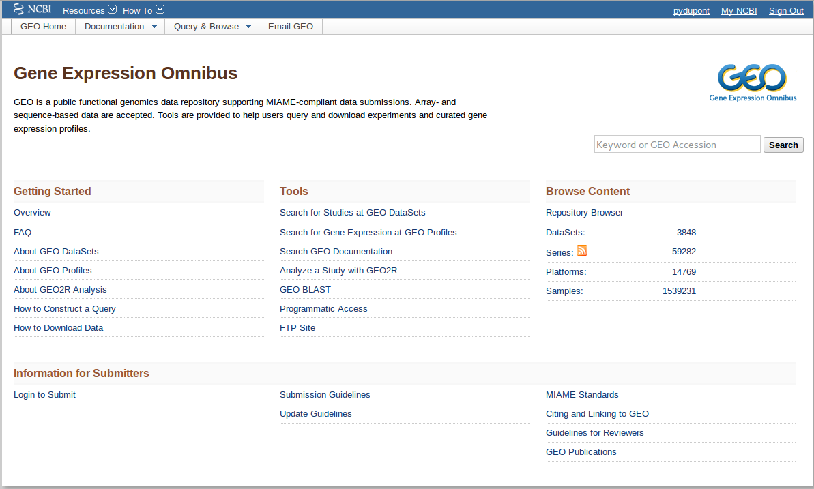
Gene expression databases
Geo Datasets @NCBI (http://www.ncbi.nlm.nih.gov/gds/)
Geo Profiles @NCBI (http://www.ncbi.nlm.nih.gov/geoprofiles/) 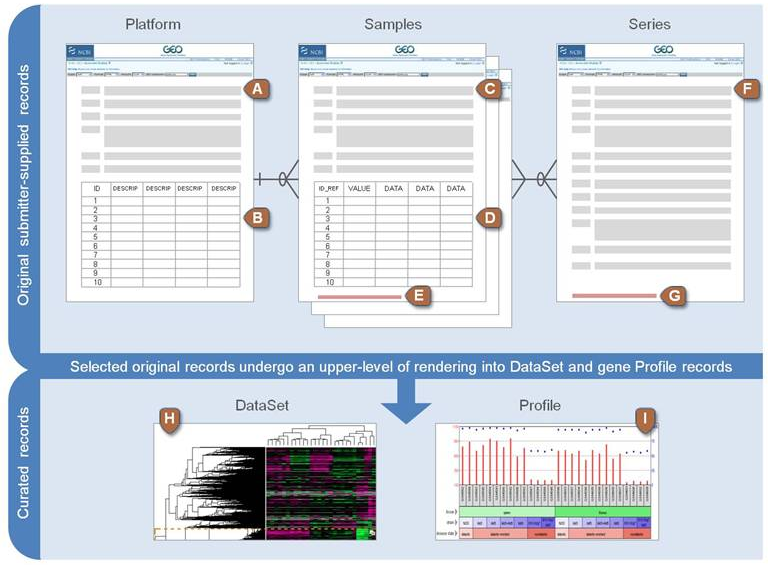
Geo Profiles @NCBI (http://www.ncbi.nlm.nih.gov/geoprofiles/) 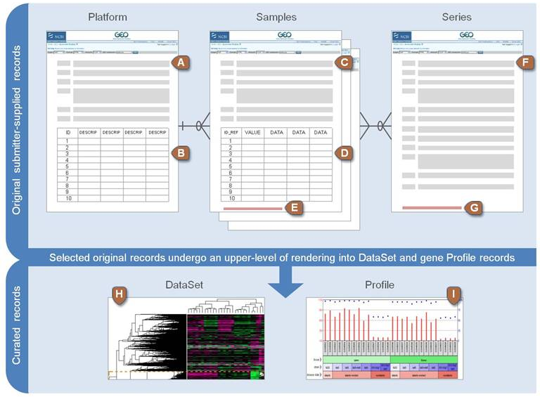
Gene expression databases
ArrayExpress @ EBI (http://www.ebi.ac.uk/arrayexpress/)
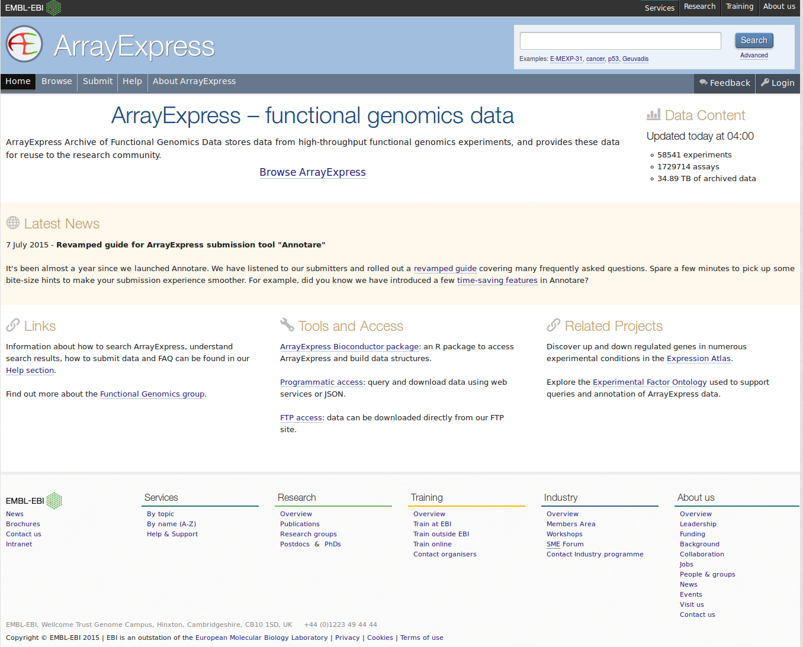
Gene expression databases
Expression Atlas @ EBI (http://www.ebi.ac.uk/gxa/)
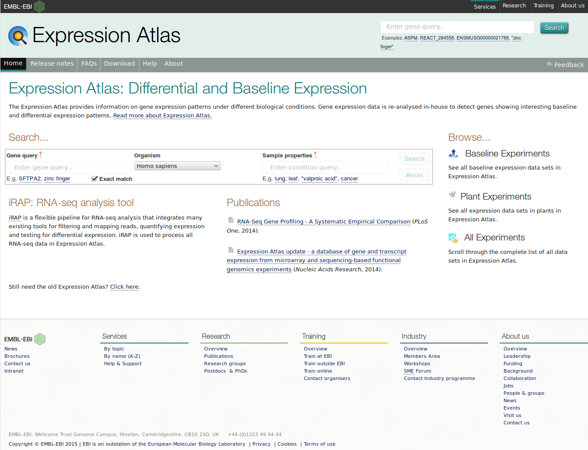
Microarray studies
- Introduction
- Microarray technology
- Analysis
- MIAME
- Examples of microarray studies (paper discussion topic and lab topic)
Microarray paper discussion
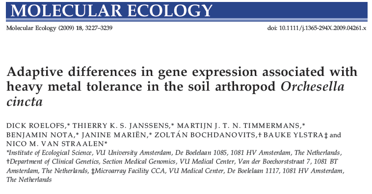Lab case study: Herbivory in Nicotiana attenuata (Solanaceae)
| 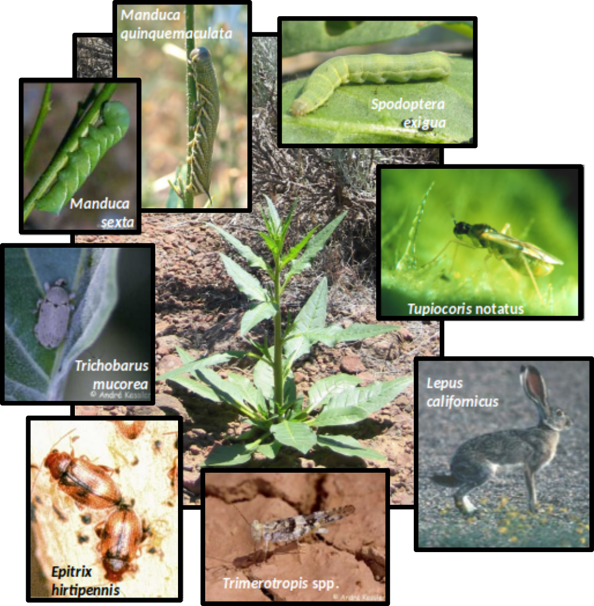 |
What type of research?
|
Lab case study: Herbivory in Nicotiana attenuata (Solanaceae)
Why N. attenuata?
|
Case study - Chips, veggies & vegetarians
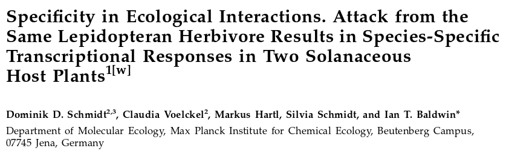Case study - Chips, veggies & vegetarians
| The chip: cDNA array with 15,264 potato genes from TIGR (The Institute for Genomic Research) | |||||
| The veggies | The vegetarian | ||||
| Solanum nigrum Black nightshade |
Nicotiana attenuata Coyote tobacco |
 |
Manduca sexta | ||
- Question:
- Do tobacco and black nightshade plants respond differently to caterpillar attack?
Microarray Case Study
RNA source
2 herbivore treatments and 2 controls
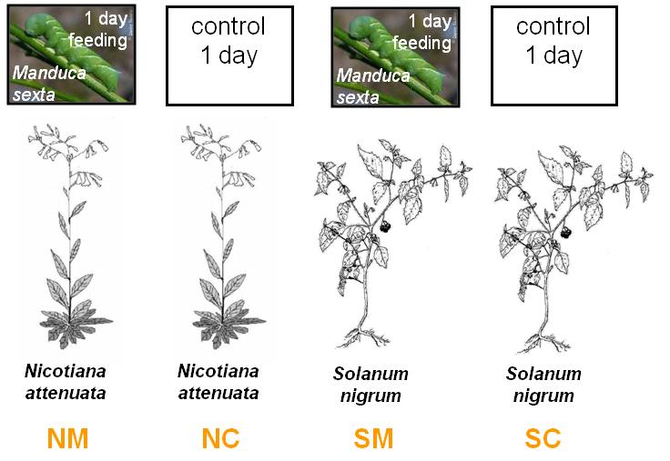
Microarray Case Study
6 arrays
Each arrow represents one array. Herbivore-induced tissue (cy3) was co-hybridised control tissue (cy5). Each comparison was replicated three times.
What will you do in the lab?
- Lab 1
- R warm-up exercise. Identification of differentially expressed genes
- Lab 2
- Identification of differentially expressed biological processes